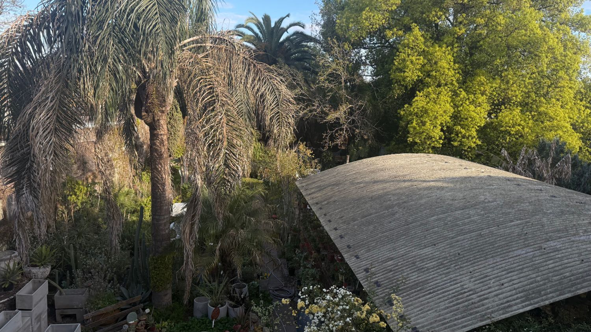
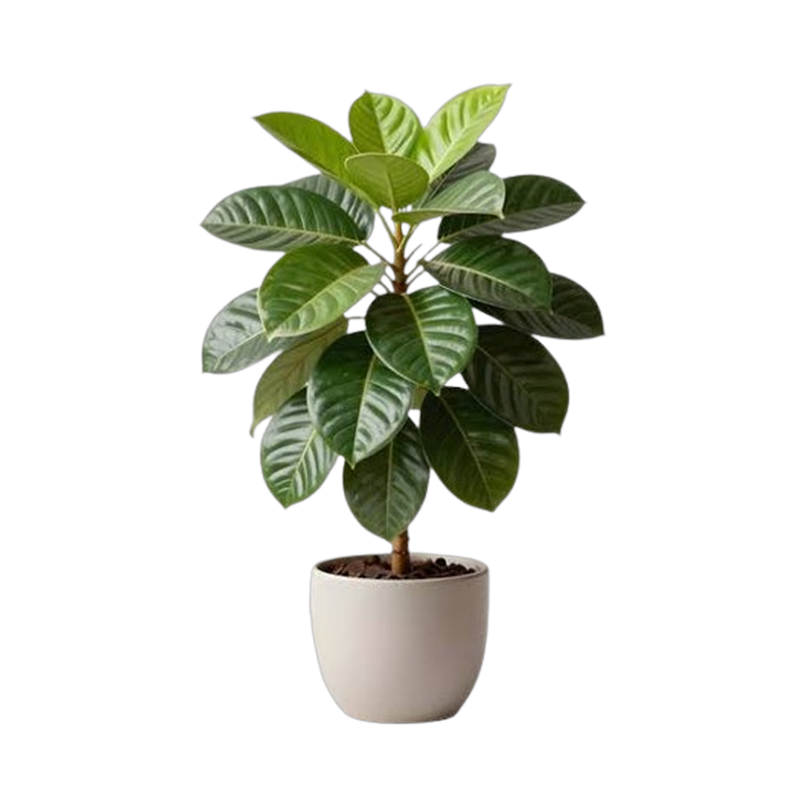
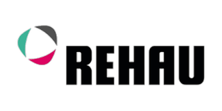
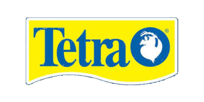

Tu vivero de toda la vida
Plantas, tierra, macetas y todo lo que necesitás para tu jardín o tu balcón — atendido por la misma familia desde hace más de 50 años.
Bv. Juan Domingo Perón 1232, Moreno
// nuestros rubros
Todo lo que necesita tu espacio verde
La variedad de un vivero grande, con la atención cercana de siempre.

Plantas
El corazón de Vivero Vancho: una gran variedad de plantas de interior y exterior, para cada rincón de tu casa, tu balcón o tu jardín. Te asesoramos para elegir la que mejor se adapte a la luz y el espacio que tenés.
// trabajamos con
Las marcas en las que confiamos
Elegimos trabajar con estas marcas para asegurarte la calidad de siempre.


Piletas
Macetas
Grow shop
Agroquímicos
Jardinería
Tierras
Acuarios
// nuestra historia
Más de 50 años, la misma familia
Acompañamos a las familias de Moreno desde hace más de 50 años, ayudando a elegir la planta justa para cada espacio y resolviendo todo lo que hace falta para el jardín: desde la tierra hasta la maceta.
Somos la misma familia de siempre, con el mismo cuidado de toda la vida.
Seguinos en Instagram// nuestro mundo
Así es Vivero Vancho
Fotos reales de nuestro predio, sacadas por nosotros mismos.
Reseñas
Esto es lo que dicen quienes ya nos visitaron. Reseñas reales de nuestra ficha de Google:
"Un lugar al que voy hace décadas. La atención de toda la familia es excelente. Hay mucha variedad de productos y si entras a buscar plantas y adornos para el jardín, te asombra las cosas lindas que hay. Un honor tener en el barrio, un lugar tan agradable."
— Viviana Carpintero
"Muy destacable principalmente por la atención recibida. Mucha variedad y cantidad de plantas, flores, adornos, herramientas."
— Ignacio González Orfila
"Excelente lugar para ir a comprar plantas, muy buena atención, mis plantas comprada en Vancho, ¡muy recomendable!"
— Roxana Loza
"Conozco el vivero hace años, súper recomendable. La atención es muy cálida y la variedad, excelente. Es un paseo visitarlos, ¡un 10!"
— Cecilia Conforti
"Tiene muy lindas plantas y objetos bonitos. Los dueños son súper amables."
— Roxana Dagostino
"Es un placer ir a disfrutar de un ambiente natural, agradable, con una atención personalizada y amable, y después de todo comprar vida y belleza llevándote una planta."
— alicia beatriz concheiro
"Excelente atención y asesoramiento. ¡Desde hace 20 años los visito!"
— Erica Mohr
"Buenos precios, buenísima atención. ¡Hermoso lugar!"
— Graciela Zarate
"Excelente atención y muy buena calidad de productos."
— Nicolás Laudonio
// visitanos
Encontranos en Moreno
Horarios
Martes a sábado: 9 a 12 y 16 a 19
Domingo: 9 a 12
Lunes: cerrado
// hablemos
Contacto
Atendemos consultas por WhatsApp e Instagram — escribinos por el que prefieras.